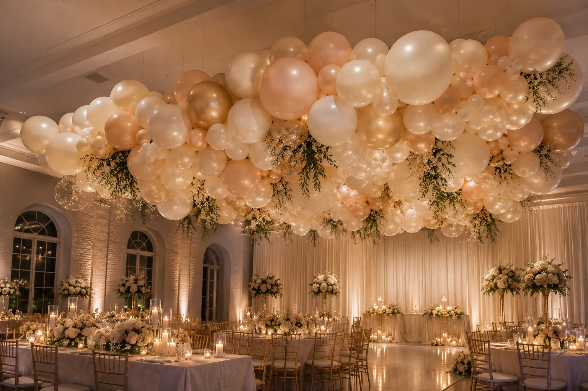

When most people picture balloons at a wedding, they picture the arch. And the arch is a classic for good reason — it photographs beautifully, frames the couple and creates an instant focal point. But it is far from the only option, and for many couples it is not the right one.
The most memorable wedding balloon styling we see tends to come from a different question: not "should we have an arch?" but "where in this venue do we want people to look?" Sometimes that is the ceremony backdrop. Sometimes it is the sweetheart table, or the entrance, or the ceiling above the dance floor. Start there, and the styling follows naturally.
Here are the ideas worth considering — what each one does well, what it suits and what to keep in mind before you book.
Organic Garlands: The Versatile Alternative
An organic garland — a freeform, cloud-shaped arrangement of balloons without a rigid frame — is one of the most flexible wedding styling options available. Unlike a traditional arch, which has a fixed shape, an organic garland can be shaped to follow a wall, drape across a mantelpiece, frame a doorway or trail along the edge of a sweetheart table.
For weddings, the appeal is the softness. Where a balloon arch can feel bold and celebratory, a well-made organic garland in cream, white and sage reads as genuinely elegant — more in keeping with the tone of a wedding than people often expect from balloons.
| Setting | How an Organic Garland Works |
|---|---|
| Ceremony backdrop | Frames the couple during the ceremony and vows — soft, romantic and highly photographable |
| Sweetheart table | Trails behind or above the top table to frame the couple at dinner |
| Entrance or doorway | Greets guests as they arrive — works with both indoor and sheltered outdoor venues |
| Fireplace or mantelpiece | Dresses a focal point in the venue without taking up floor space |
| Staircase | Follows the banister line for a dramatic, editorial look in a grand venue |
Worth knowing
An organic garland needs a fixing point — a wall, a frame, a surface or a backdrop stand. Before booking, check with your venue whether drilling or attaching to walls is permitted. Most venues are happy with command strips or fishing line on existing fixtures, but it is worth confirming in advance.
Ceiling Installations: The Unexpected Wow
A ceiling cloud installation — balloons suspended from above to create a floating canopy — is one of the most dramatic things you can do with balloon styling at a wedding. Done well, it transforms a venue completely. Guests walk in and look up rather than across, which changes the entire feeling of the space.
This works particularly well above the dance floor, where the installation becomes the backdrop for the first dance photographs, or above a large round dinner table as an alternative to a traditional floral centrepiece. It requires a venue with suitable ceiling fixtures for hanging, so always check this before planning.

Plinths & Columns: Framing the Ceremony
Balloon plinths and columns are freestanding displays — weighted at the base and styled with balloons — that can be positioned anywhere in the venue without fixing to a wall or ceiling. They are one of the most practical wedding styling options because they move easily, suit both indoor and outdoor spaces and require no venue permissions.
Used in pairs, plinths frame the ceremony aisle beautifully. They can also mark the entrance to the reception, line the route from the ceremony to the drinks reception, or stand either side of the sweetheart table. A single large plinth beside the guest book or gift table adds height and interest without overwhelming the space.
| Placement | Effect |
|---|---|
| Ceremony aisle (pair) | Frames the walk to the altar — elegant and traditional |
| Venue entrance (pair) | Greets guests and sets the tone before they enter the room |
| Sweetheart table (pair) | Creates a backdrop and focal point for the top table |
| Photo opportunity corner (single) | Provides a styled backdrop for guest photos without a full installation |
| Gift or guest book table (single) | Adds height to a smaller display without floor space issues |
Confetti Balloons: The Subtle Detail
A confetti balloon is a large clear latex balloon filled with paper or foil confetti — it looks light, celebratory and photographically interesting without the visual weight of a solid-colour balloon. At weddings, they tend to work best as an accent within a larger garland or cluster rather than as a standalone display.
Match the confetti colour to the wedding palette — gold confetti in a blush and champagne garland, white and silver confetti in a sage and white display, rose gold confetti against cream and blush. The confetti should feel like part of the colour story, not a contrast to it.
A note on confetti balloons outdoors
Confetti balloons are best suited to indoor settings. Outdoors, the confetti can move unpredictably and the clear latex is more susceptible to temperature and sunlight. If you love the look for an outdoor ceremony, position them in a sheltered spot away from direct sun and wind.
Table Centrepieces: An Alternative to Florals
Balloon table centrepieces are less common at weddings than florals, but they can be genuinely striking — particularly in a venue with high ceilings where a tall balloon cluster creates drama from a distance. The key is scale and restraint: a single statement centrepiece per table in a coordinated palette reads as intentional, whereas several different balloon styles across the room can look confused.
Balloon centrepieces work well paired with floral elements rather than replacing them entirely. A low floral arrangement at the base of a balloon cluster, or a single stem alongside a smaller balloon display, keeps the table feeling warm and organic rather than purely themed.
Wedding Balloon Colour Palettes
The palette is where wedding balloon styling lives or dies. The same installation in the wrong colours can look out of place; in the right ones, it disappears into the overall design of the day. Start with your wedding colours and work outward from there.
White, Cream & Gold
The most classic and versatile wedding palette. Works in every venue from barns to ballrooms.
Blush, Cream & Champagne
Soft and romantic — pairs beautifully with pampas grass, dried florals and warm candlelight.
Sage, White & Gold
Fresh and contemporary — works well for outdoor and barn weddings with botanical styling.
Navy, White & Silver
Bold and dramatic — suits formal evening receptions and grand venues with high ceilings.
Terracotta, Nude & Rust
Earthy and warm — pairs well with dried flowers, exposed brick and autumn weddings.
Lavender, Blush & Gold
Romantic and feminine — suits spring and summer weddings, particularly garden parties and marquees.
For more guidance on building a colour palette, see our guide to how to choose a colour palette for your balloon display.
Matching the Style to Your Venue
The venue does a lot of the work in determining which balloon styling approach will look best. A rustic barn with exposed beams suits a different display to a formal hotel ballroom, and getting this right matters as much as the colour palette.
| Venue Type | Styling That Works Well |
|---|---|
| Barn or rustic | Organic garlands in sage, cream and terracotta; plinths with trailing foliage; confetti balloons as accents |
| Hotel ballroom | Ceiling cloud installation; tall balloon columns framing the top table; white and gold palette |
| Marquee | Garlands along the tent poles or roof line; plinths framing the entrance; soft blush and champagne palette |
| Garden or outdoor | Weighted plinths; sheltered garland installations; avoiding ceiling or hanging displays |
| Modern events space | Sculptural organic garland on one feature wall; ceiling cluster above the dance floor; bold or monochrome palette |
| Village hall or intimate venue | One well-placed garland rather than multiple displays; plinths instead of ceiling installs; restraint works best |
The best wedding balloon styling doesn't look like it's trying hard. It just looks like the venue, but better.
Practical Things to Know Before You Book
Check Your Venue's Policy
Most venues are happy with balloon styling, but some have restrictions — particularly around latex balloons outdoors, helium in listed buildings or fixing to certain surfaces. Ask your venue coordinator before confirming any display, and share that information with your stylist so they can plan accordingly.
Timing Matters
Balloon installations are typically set up on the morning of the wedding or the evening before. If your venue has a tight changeover between ceremony and reception, discuss timing early — a complex ceiling installation needs more time than a pair of plinths.
How Long Will Balloons Last?
High-quality latex balloons last 12–24 hours indoors; longer in a cool, stable environment. Air-filled displays (rather than helium) last considerably longer — weeks rather than hours. For most wedding setups, the balloons will look beautiful throughout the day and evening. For more detail, see our guide to how long balloons last.
One Statement Display or Several Smaller Ones?
This is worth thinking through carefully. One well-designed installation in the right spot tends to create more impact than several smaller displays spread across a venue. If the budget is limited, invest it in one thing that is genuinely impressive — typically the ceremony backdrop or the sweetheart table — rather than spreading it thinly across the whole room.
Wedding Balloon Styling in Kent
At Little Moment Studio, based in Sittingbourne, we create balloon garlands and styled installations for celebrations across Kent and the Medway area. Weddings are a natural extension of what we do — the same attention to colour, proportion and finish that goes into a baby shower garland applies just as much to a wedding backdrop.
If you are planning a wedding in Kent and would like to explore what balloon styling could look like for your venue and palette, we would love to hear from you. A free consultation is the best place to start — it gives us a chance to understand your day and suggest what would work best for your specific space.
Planning a Wedding in Kent?
Tell us about your venue, your colours and the feel you're going for — we'll help you work out what balloon styling would look best for your day. Free consultation, no obligation.